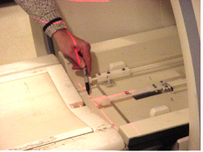
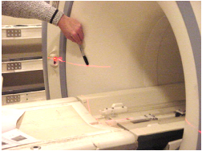

Operating Documentation
Direction 5133330-3, Rev# 14
Signa EXCITE HD 3.0T Service Methods
Module Version 1.0, Version Date 5/15/07
Operating Documentation |
This process checks the alignment of the Laser Beams at the magnet entry.
1. Check whether Axial Alignment light at the top is aligned with the marks on the Bridge as shown below. See Illustration 1. If there are no marks in the cradle, verify the Axial alignment light is plumb or aimed straight down. If needed, make necessary adjustment using Laser Light Alignment procedure. Then make two marks with a pen in the locations as shown in Illustration 1). This will be the reference for future Alignment Light Checks.
Illustration 1: Alignment Marks Before The Lights Are Switched On

Illustration 2 below shows the alignment of the marks after the beam is switched on.
Illustration 2: Beam Alignment Example

2. Referring to Illustration 2, the two laser lights shining across the magnet entry should be aligned with each other and the marks.
3. As shown in Illustration 3, there should be only one laser line seen (the one from laser source on the left side aligned with the one from right side laser beam).
Illustration 3: Side Alignment

4. If the alignment mentioned in 1 is offset, then the top Laser source at the magnet entry has to be adjusted. If the alignment mentioned in 2 is offset (i.e. you see two lines), then the Laser sources on left and right hand side of the magnet entry has to be adjusted. If adjustments are needed, see Alignment Light Adjustment.